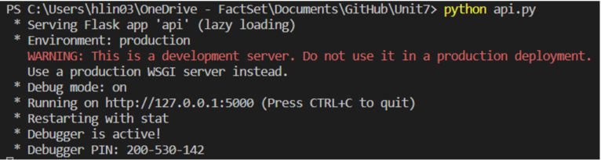

MY ARTEFACT
All artefacts demonstrating development over the duration of the module.
Codio Activity
Exploring Python tools and features
Part I
In this example, you will compile and run a program in C using the Codio workspace provided (Buffer Overflow in C). The program is already provided as bufoverflow.c - a simple program that creates a buffer and then asks you for a name, and prints it back out to the screen.
This is the code in bufoverflow.c (also available in the Codio workspace):
int main(int argc, char **argv)
{
char buf[8]; // buffer for eight characters
printf("enter name:");
gets(buf); // read from stdio (sensitive function!)
printf("%s\n", buf); // print out data stored in buf
return 0; // 0 as return value
{
Questions and my Answers
• What happens?
Output shows (first time):
Enter name: HungWeiLin
HungWeiLin
*** stack smashing detected ***: terminated
Aborted (core dumped)
Output shows (first time):
Enter name: HungWeiLin
HungWeiLin
*** stack smashing detected ***: terminated
Aborted (core dumped)
• What does the output message mean?
It means that it have a buffer overflow and the canary gets overwritten by a different value.
Part II
Now carry out a comparison of this code with one in Python (Buffer Overflow in Python), following these instructions:
In the Codio workspace, you will be using the file called Overflow.py:
buffer=[None]*10
for i in range (0,11):
buffer[i]=7
print(buffer)
Questions and my Answers
• Run your code using: Python overflow.py (or use the codio rocket icon)
• What is the result?
Traceback (most recent call last):
File "overflow.py", line 3, in
buffer[i]=7
IndexError: list assignment index out of range
• Read about Pylint at http://pylint.pycqa.org/en/latest/tutorial.html
• Install pylint using the following commands: pip install pylint (in the command shell/ interpreter)
• Run pylint on one of your files and evaluate the output: pylint your_file
• (Make sure you are in the directory where your file is located before running Pylint)
• What is the result?
************* Module Overflow
Overflow.py:4:0: C0303: Trailing whitespace (trailing-whitespace)
Overflow.py:5:0: C0304: Final newline missing (missing-final-newline)
Overflow.py:1:0: C0103: Module name "Overflow" doesn't conform to snake_case naming style (invalid-name)
Overflow.py:1:0: C0114: Missing module docstring (missing-module-docstring)
------------------------------------------------------------------
• Does this tell you how to fix the error above?
Yes!
Exploring Python tools and features
from cmd import Cmd
import os
class MyPrompt(Cmd):
def do_list(self, rootdir):
'''lists the contents of the current directory.'''
rootdir = '/home/codio/workspace'
for file in os.listdir(rootdir):
d = os.path.join(rootdir, file)
if os.path.isdir(d):
print(file)
def do_add(self, inp):
'''add the two numbers together and provide the result.'''
a = input('Enter first number:')
b = input('Enter second number:')
try:
print(int(a)+int(b))
except:
print("Please enter only number for addition")
def do_exit(self, inp):
'''exit the application.'''
print("Bye bye!")
return True # end the loop
#To run the class in a loop
MyPrompt().cmdloop()Developing an API for a Distributed Environment
Question 1
Run the API.py code. Take a screenshot of the terminal output. What command did you use to compile and run the code?
Question 2
Run the following command at the terminal prompt: w3m http://127.0.0.1:5000/user/Ann
What happens when this command is run, and why?
The command does not work for me. I have tried to install the w3m, but not able to find any install command that work.
I assume that the output will be "200 OK"
Question 3
Run the following command at the terminal prompt: w3m http://127.0.0.1:5000/user/Adam
What happens when this command is run, and why?
I am not able to get the expected output as I mentioned from Question 2.
But I assume that the output will be "404 Not Found", as the user Adam does not exist.
- How many hops from your machine to your assigned website?
- Which step causes the biggest delay in the route? What is the average duration of that delay?
- What are the main nameservers for the website?
- Who is the registered contact?
- What is the MX record for the website?
- Where is the website hosted?
My Work:
- Click to Open
[Individual work] - Practical Activity - Scanning Exercise
NIST Research
The National Institute of Standards and Technology (NIST)
Framwork Core
- Identify
- Protect
- Detect
- Respond
- Recover
Profiles
We may put all the information (Business Objectives, Threat Environment, Requirements and controls) together into the cybersecurity profile, which help organization align and prioritize cybersecurity activities
- Target profile
- Current profile
- Gap analysis
Framwork Core
- Partial
- Risk Informed
- Repeatable
- Respond
Seminar Self preparation
Security Standards
• Which of the standards discussed in the sources above would apply to the website/ organisation assigned to you for the assessment? For example, a company providing services to anyone living in Europe or a European-based company or public body would most likely be subject to GDPR. A company handling online payments would most likely need to meet PCI-DSS standards.
a. As the website assigned to us is an e-commercial website, which would involve online payment, the PCI Security Standard should apply to our assessment.
b. GDPR should also apply to our website as it is an UK based website. As an e-commercial website, loadedwithstuff.co.uk would restore user's information, which contain personal data and credential information, therefore, we should also apply the GDPR regarding the data protection principles topics.
• Evaluate your assigned website against the appropriate standards and decide how you would check if standards were being met?
A company’s AOC, or Attestation of Compliance, is their formal proof that they are in compliance with PCI DSS requirements.
The rules of PCI compliance must be met by any organisation that accepts credit card payments
• What would your recommendations be to meet those standards?
a. It should be part of our maintenance program to request an updated AOC from all service providers on an annual basis.
b. Ensuring your service providers are PCI compliant and actively tracking their compliance is an important and often overlooked part of meeting PCI requirements.
c. Should be considering things like security testing as well
• What assumptions have you made?
To ensure the safety of the payment process, a comprehensive plan should be made to ensure the website meet the PCI standard.
Once the plan is made, it should be followed regularly and updated the plan according to the current situation when it is needed.
PCI ComplianceGuide.org. (2020). PCI Compliance and Your Website: A Guide - PCI Compliance Guide. https://www.pcicomplianceguide.org/pci-compliance-and-your-website-a-guide/
Data Breach Case Study
- Click to Open
[Individual work] - Seminar 5 preparation - Data Breach Case Study